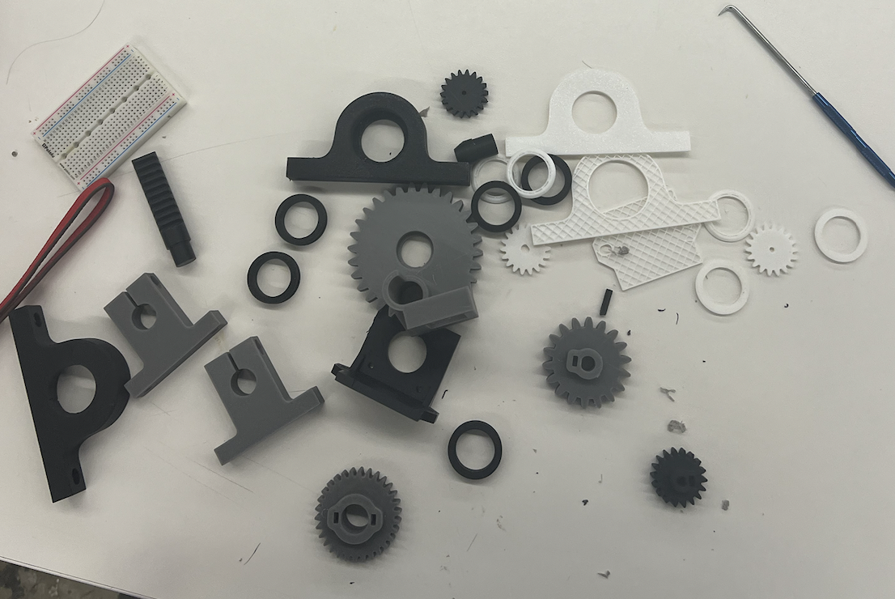
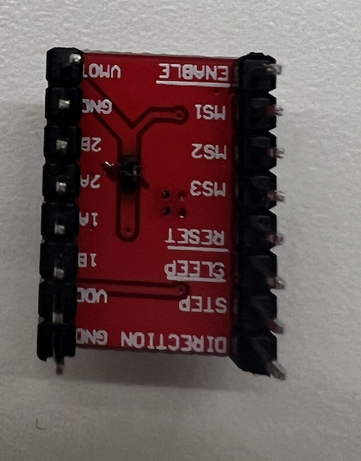
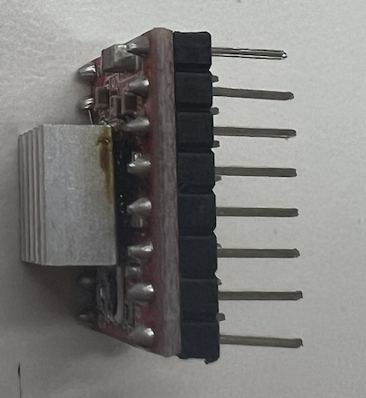
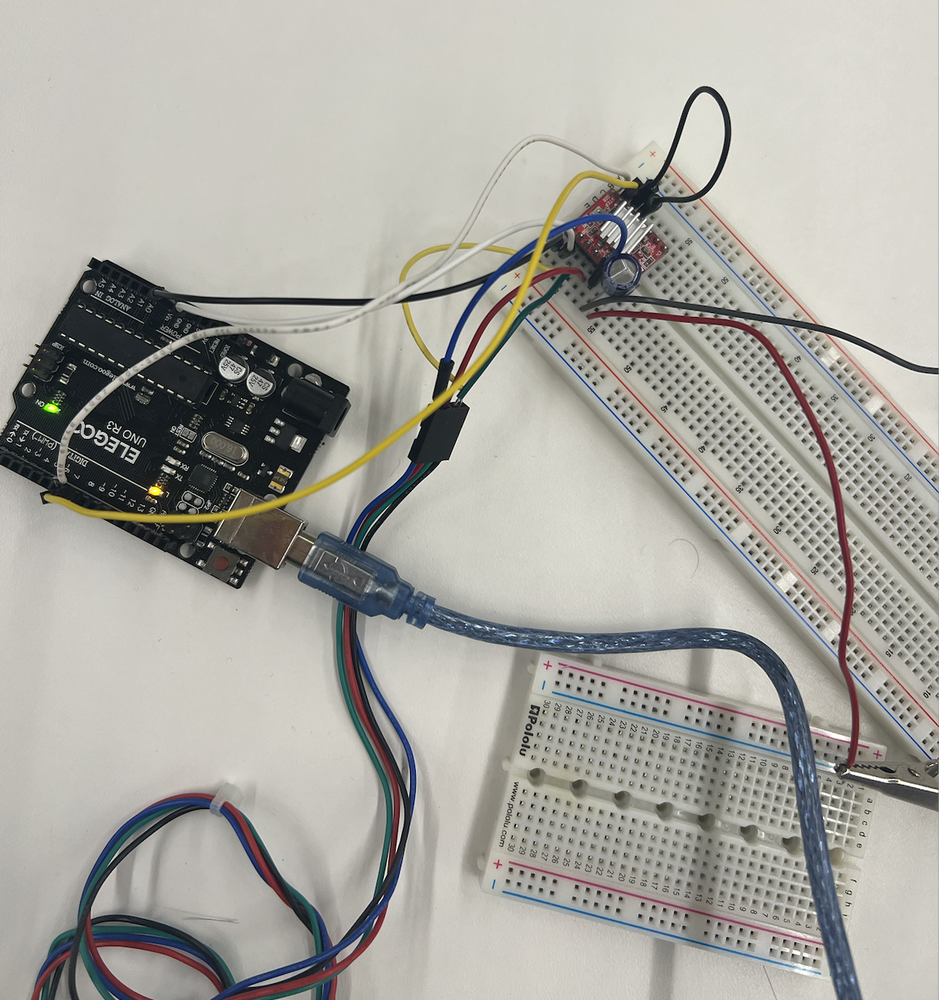
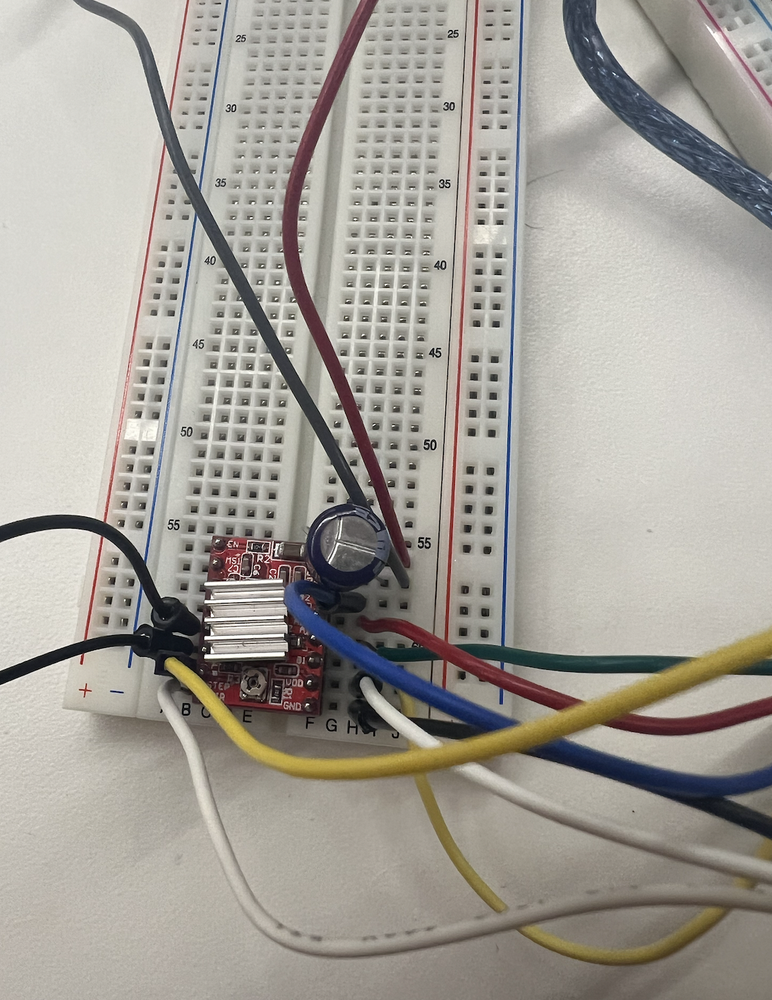

<div class="textcontainer">
<p class="margin"> </p>
<h3>Week 7: Electronic Outputs</h3>
<h4>Assignment: Minimum Viable Product for Final Project</h4>
<p class = "margin"></p>
<br> </br>
I had a lot of trouble honestly with the 3-D printers because many of them were broken and didn't want to work with me. Also, since Prusa does not work on my computer I had to use UltiMaker Cura which made the settings on the printer.
This also may have caused a problem because the temperature was 200 instead of 215 degrees.
However, eventually I got my gears and supports printed. However, it was much later than I wanted therefore I did not get the MVP done that I wanted.
But I did manage to figure out how to use the stepper motor which will be crucial since my project includes 2 of them and a server motor which we already learned how to use in previous weeks.
I also had to design all the boards/bases for my project which I need to cut out of wood or acrylic but I think I will do wood. However, due to my complications I was not able to do this in time.
<br> </br>
<p class = "margin"></p>
Here is my 3-D model of my final project.
<a download href='./Automatic 3D Wire Bending Machine v1.stl'>Download my STL file </a>
<p class = "margin"></p>
<br> </br>
Here are pictures of my printed parts.
<br> </br>
<p class = "margin"></p>

<p class = "margin"></p>
<br> </br>
Next, I tried to figure out how to use the stepper motor with the help of Bobby. However, for some reason we burnt two motordrivers. We suspect it was due to barrel jack connector being faulty.
Here are pictures of the motor driver that smoked and made a pungent smell!
<br> </br>
<p class = "margin"></p>


<p class = "margin"></p>
<br> </br>
As a result, we changed out our parts.
Finally, we got it to work on the third try!
Here is a picture of the final set up!
<br> </br>
<p class = "margin"></p>
<br> </br>


<p class = "margin"></p>
<br> </br>
Here is a video of the motor driver working!!!
<video width="640" height="480" controls>
<source src="steppermotor.mp4" type="video/mp4">
<br> </br>
Here is the code for that:
void setup() {
// put your setup code here, to run once:
pinMode(8, OUTPUT);
}
void loop() {
// put your main code here, to run repeatedly:
digitalWrite(8, HIGH);
delay(100);
digitalWrite(8, LOW);
delay(100);
}
<p class = "margin"></p>
</div>